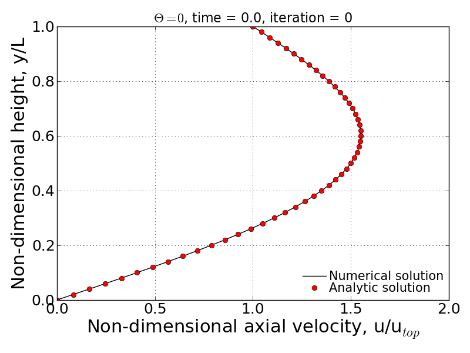

Results summary¶
A) Result #1¶
Show the expression for \(\tau\) that non-dimensionalizes the governing PDE. Show the non-dimensionalized form of the governing PDE.
B) Result #2¶
Show the non-dimensionalized form of the time-dependent exact solution expression for the specified boundary and initial conditions given in this problem.
C) Result #3¶
Provide a brief description of the finite difference scheme scheme (in non-dimensional form), the solution method used and exactly how the boundary and initial conditions are applied.
D) Result #4¶
Show the expression used for calculating the RMS Error relative to the time-dependent exact solution. Also show the expression used for calculating the RMS Error relative to the steady-state exact solution. Also, give a statement of the criteria used to end the calculations.
E) Result #5¶
For \(\theta = 0\) and \(\text{jmax} = 51\), state the maximum value of \(\Delta t\) for which a stable solution is obtained. Provide a semi-log plot of the RMS error (relative to the time-dependent exact solution) vs iteration number (using a \(\Delta t\) for which the code is stable). Create a similar plot of the RMS error (relative to the steady-state exact solution) vs. iteration number.
Given conditions, the non-dimensional spatial step size results in \(\Delta y' = 0.0002\). Performing Von Neumann stability analysis on the given conditions give rise to the below time step criterion:
\[\Delta t' \leqslant \frac{\Delta y'^{2}}{4\left ( \frac{1}{2} - \theta \right )}\]Thus, the maximum time step to stabilize the scheme is determined as \(\Delta t' = 0.0002\).

F) Result #6¶
For \(\theta = 0\), present a graph which clearly shows the progression of velocity profiles during the flow development when \(\text{jmax} = 51\). The plot should show the initial profile, final steady state profile and at least 3 other non-steady-state profiles (i.e. all on the same plot). Overlay the exact numerical velocity profiles on this plot for the same points in time. Create similar plots for \(\theta = 1/2\) and \(\theta = 1\).


G) Result #7¶
Provides a comparison of the stability behavior of your solver to the stability analysis performed in Homework Assignment #3. Compute \(\text{jmax} = 51\) cases with \(\theta = 0\), \(1/2\), and \(1\) using various values of \(\Delta t\) to explore the stability boundaries of your solver. Show and discuss whether or not your solver follows the theoretical stability behavior of these three numerical schemes.
From the HW#3’s solution, the stability analysis can be summarized by:
- Unconditionally stable if \(\theta \geqslant \frac{1}{2}\)
- Conditionally stable if \(0 \leqslant \theta < \frac{1}{2}\)
In the case of conditionally stable scheme, the maximum time step can be determined by using below relation so that the scheme is stable with given \(\theta\).
\[\Delta t \leqslant \frac{\Delta y^{2}}{4\left ( \frac{1}{2}-\theta \right )}\]Thus, for \(\theta = 0\), the maximum time step should be 0.0002 to make the scheme stable. Following figures show the convergence history for two different time step cases: (1). maximum time step and (2). slightly bigger time-step than the maximum value.

- \(dt' = 0.0002\)
- \(dt' = 0.000201\)


{kind=link}